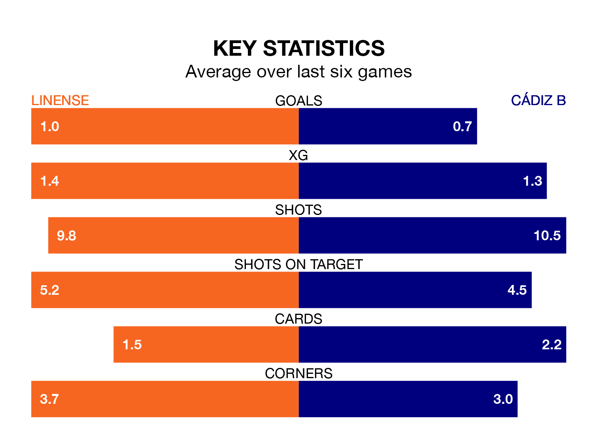

Cádiz B travel to Estadio Municipal de La Línea de la Concepción looking to secure a first win in seven Segunda División RFEF Group 4 games against Linense on Sunday.
Cádiz B have lost two and drawn four matches since they last earned three points – against La Unión Atlético on January 7.
They face a Linense side who have won two and drawn two over that time.
With 25 goals in 23 games so far this season, Linense are scoring more than average in the league with 1.1 goals per game. And they are conceding at an average rate, letting in 23 goals at a rate of 1.0 per game.
Cádiz B are also above average scorers, with 1.1 goals per game, compared to a league average of 1.0. They have conceded 1.3 goals per game.
The away side are 13th in the table after 23 games, of which they have won six and drawn nine, earning 27 points.
The hosts are six places ahead of Cádiz B in seventh, with nine wins and seven draws putting them on 34 points.
In the last five years, Linense and Cádiz B have played each other on four occasions. Linense won three of them and they drew once.
On average, Linense scored 1.2 goals and Cádiz B 0.5 in those matches.
Their last meeting was on October 14, when Linense won 2-1 away.
Linense's last match was on February 18, a 1-1 draw against Union Estepona CF.
Cádiz B lost 3-1 against Marbella last time out, also on February 18, with Karl Edouard Blaise Etta Eyong on the scoresheet.
Updated: 12:18 (UTC), 19/02/24